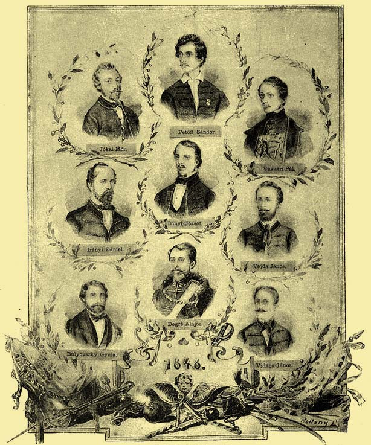
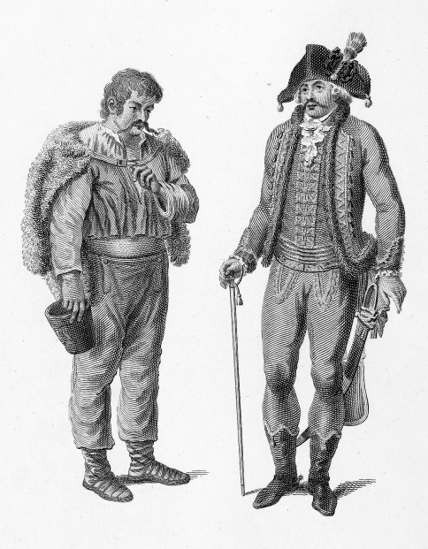
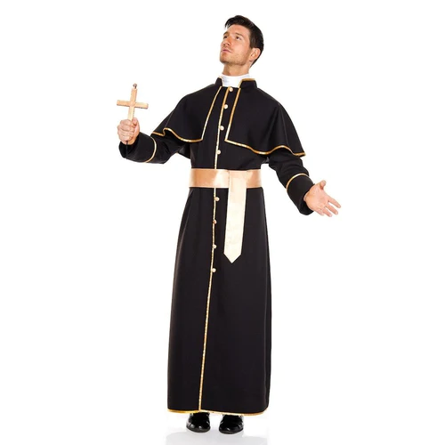
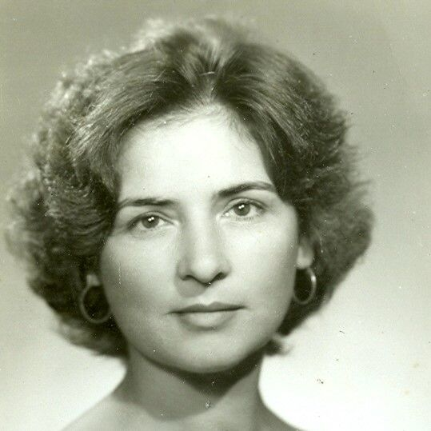

Pál Vasvári (originally Pál Fejér) was born in Tiszabüd on July 14th 1826. He was a poet, a historian, a teacher, a philosopher, a politican, a revolutionist and a soldier. He was an outstanding figure among the March Youth. At his younger age he wrote under the pseudonym: Bánk Sali to several journals.
His grandfather, János Fejér was a liberated serf. The priestly ordination of his father, Pál Fejér took place on December 12th 1813. From 1814 to 1821 he was a priest in Damóc. Until 1827 he was an administrator in Bűd. His wife was called Rozália Kőmíves. The number of their children is unknown. We know of 4 children, 1 girl and 3 boys.   
He died at the age of 22, but we don't know its exact date.
Their are two possible date, July 6th 1849 or July 13th 1849.